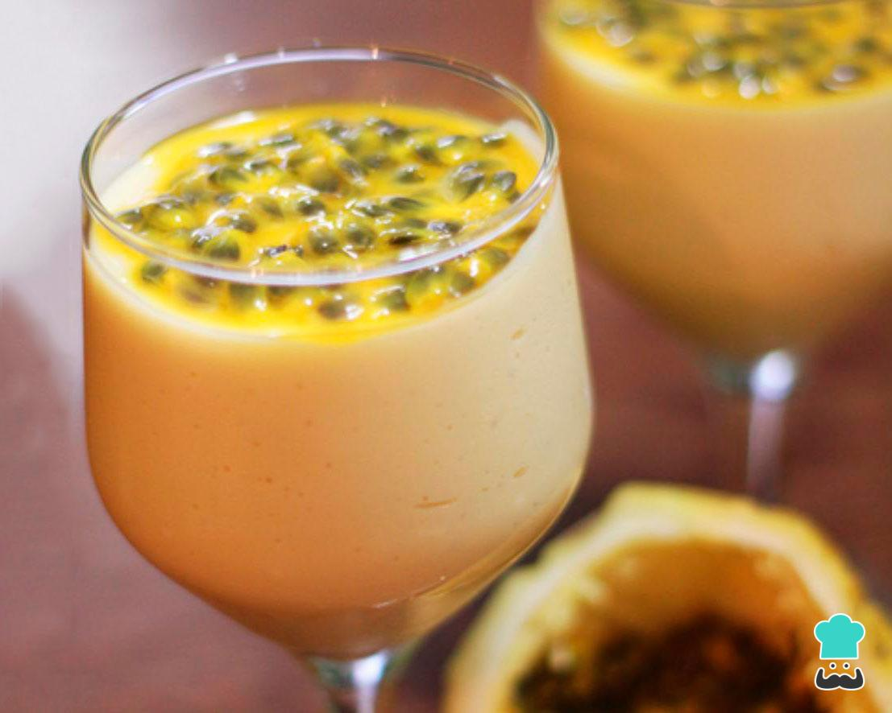
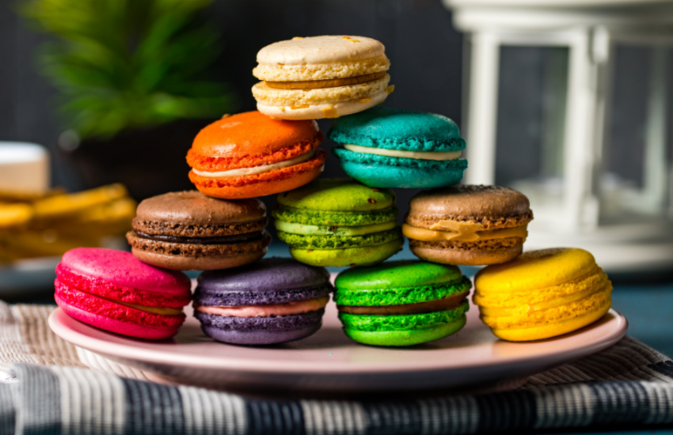

Aqui você poderá aprender receitas fáceis, rápidas e para qualquer feixa etária. Cozinhar é simultaneamente uma brincadeira de crianças e um prazer de adultos. Cozinhar com zelo é um ato de amor. Estudos comprovam que a culinária é uma ótima maneira de se detrair dos problemas e muitas vezes curam doenças como ansiedade ou depressão.
 